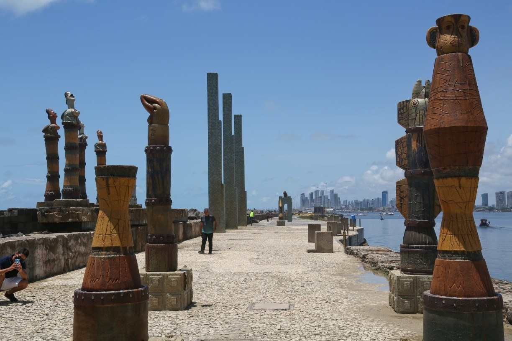
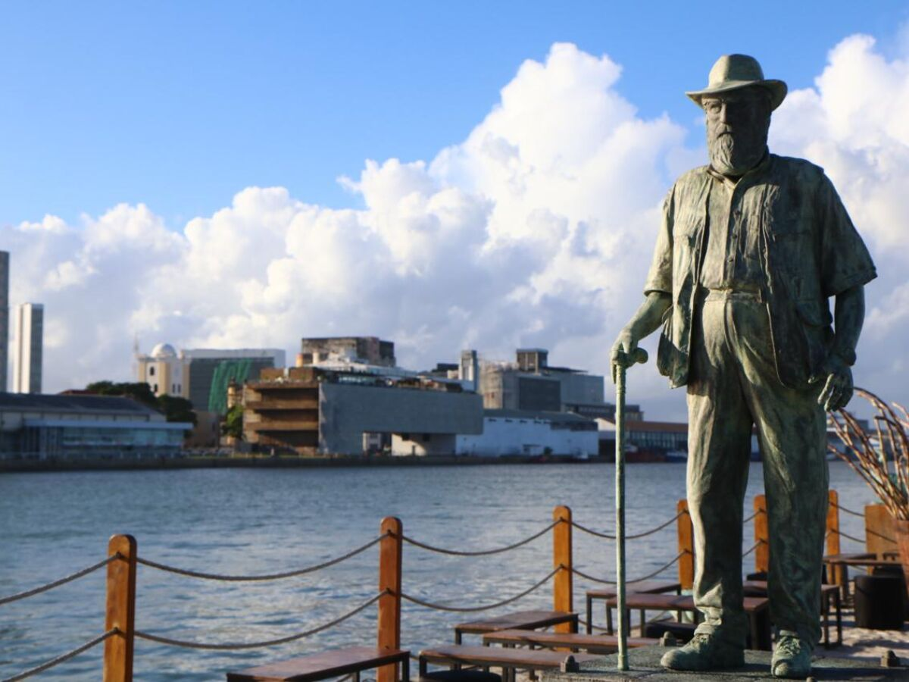
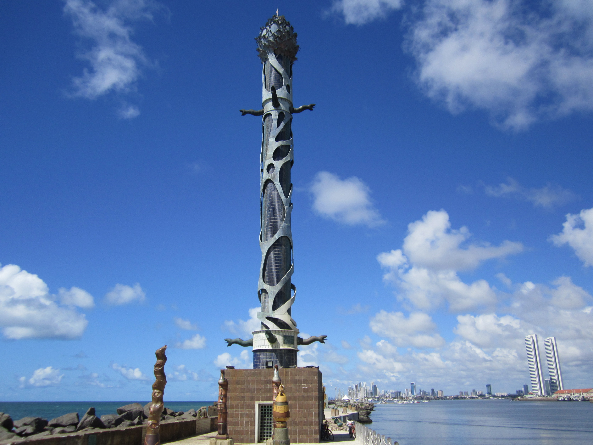

Conheça Parque das Esculturas em Recife!
O Parque
O Parque das Esculturas Francisco Brennand é um museu de arte a céu aberto localizado na cidade do Recife, capital do estado brasileiro de Pernambuco. Constitui um dos principais feitos do artista plástico pernambucano Francisco Brennand.
Fotos
_____________________________________________________________________________________
  _____________________________________________________________________________________